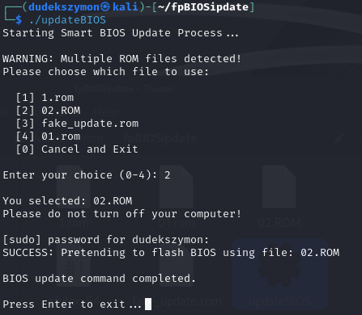
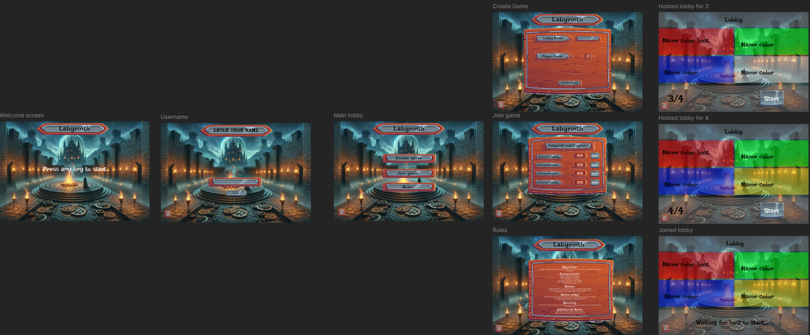
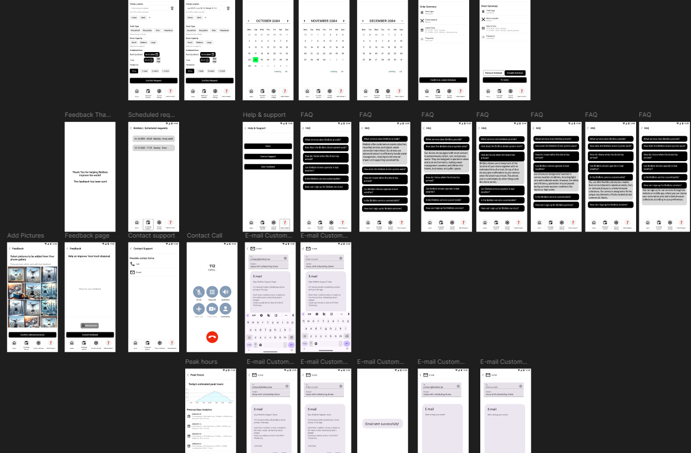

HOLO911.
Cybersecurity Student @ Howest
AI & Robotics Intern @ Advantech
Building at the intersection of offensive security, AI, and autonomous systems - currently based in Tokyo.
Projects
Security research, robotics, and everything in between.
Autonomous Drone - Object Tracking via YOLO
Built a fully autonomous drone system for Advantech's Japan IT Week demo. Assembled the hardware from scratch, configured the flight controller, and installed ROS2 with MAVROS on a QUALCOMM companion board. Wrote a Python pipeline that runs YOLO for real-time object detection, locks onto a target, tracks its screen position, and sends yaw commands to the motors so the drone follows the object while hovering at a fixed altitude.
Also developed a second variant using a quantized YOLO model on the QUALCOMM Neural Processing Unit for significantly better inference performance, showcasing the board's edge AI capabilities at the expo.
Autonomous Navigation Behavior Tree
Engineered a custom ROS 2 Behavior Tree for the ROSMASTER X3 to handle autonomous navigation in tight, dynamic environments. Default navigation stacks try to aggressively replan around obstacles, which creates collision risks in spaces like warehouse aisles or restaurant dining areas.
Designed a "stop-and-wait" pipeline instead: when the robot detects a dynamic obstacle (like a person), it halts along its trajectory, waits for the path to clear, then resumes its original route. This guarantees predictable, collision-free operation and prevents the robot from dangerously swerving into walls or furniture.
BIOS Flash Utility
Built a compiled, systems-level C utility for Advantech that streamlines BIOS flashing. The tool scans the local directory for .rom files and generates an interactive menu for the operator. Includes strict memory-bounds checking to prevent buffer overflows, an input allowlist to reject suspicious filenames, and uses native POSIX process management (fork() and execvp()) to execute the flash tool directly via the kernel, eliminating any risk of shell-based command injection.

Real-World Penetration Testing
Conducted full security audits for two real clients as part of a Howest project: a high school with over 1,000 students and 1,000+ devices active on the network daily, and a local pharmacy. Documented all findings, created a prioritized list of vulnerabilities with concrete mitigations, and presented the reports to both IT departments. Also wrote management summaries so leadership could quickly understand the risks without reading the full technical documents. Both clients were highly satisfied with the results.
Honeypot & CTF Platform
Built a website with an admin panel and integrated honeypot, monitored using the Grafana stack with custom dashboards. Created 3 CTF challenges for fellow students. In the second phase, the site was intentionally exposed for classmates to attack. No successful breach occurred: neither data nor the admin panel was compromised, and most attack attempts were logged and visualized on the dashboards.
Labyrinth - Browser Board Game
Developed a fully functional browser-based version of the board game "Labyrinth" during my first year at Howest. Implemented the complete game logic and all rules, and created a custom set of images, icons, tiles, characters, and a full menu interface from scratch.

BinBots - Drone Fleet Waste Management (2079)
Created a full proof-of-concept for a futuristic business set in 2079, where a returning space colony needs new infrastructure. The idea: a drone fleet that picks up trash from residents' windows in dense skyscrapers and delivers it to wastelands outside habitable zones.
Built a complete Figma wireframe with every button and flow functional across both the user app and admin panel. Also developed a marketing website for the service. The concept won strong marks for creativity and execution depth.



Hackathons
48-hour sprints and high-pressure problem solving.
Hackathon archive compiling...
About
Born and raised in Poland. Spent six years in music school alongside regular education - studying music theory, history, and playing piano from age 7 to 12. That training shaped how I think: pattern recognition, discipline, and a structured approach to complex problems.
At 18 I moved to Belgium alone to study cybersecurity at Howest - drawn by the program's reputation and the challenge of building an independent life in a new country. Now at 20, I'm interning at Advantech in Tokyo, building autonomous drones with AI-powered navigation.
Designing and building autonomous drones with AI-powered navigation at Advantech Tokyo. Integrating computer vision for real-time object recognition and autonomous flight control. Preparing for my next chapter - a Master's in Cybersecurity & Resilience in Austria.